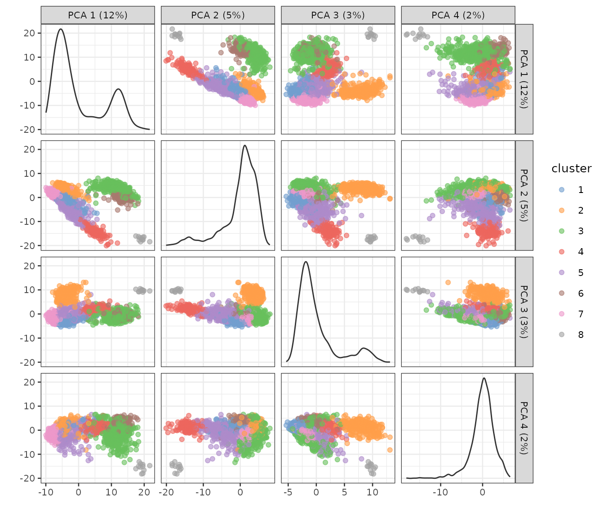
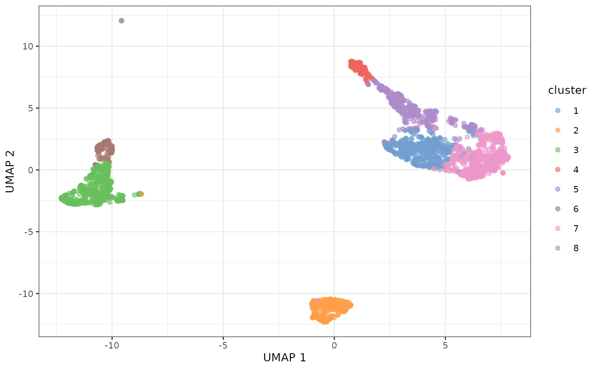

Using concordex in place of UMAP in scRNA-seq
Lambda Moses
Apr 03, 2023
Source:vignettes/concordex-demo.Rmd
concordex-demo.RmdIntroduction
UMAP is commonly used in scRNA-seq data analysis as a visualization
tool projecting high dimensional data onto 2 dimensions to visualize
cell clustering. However, UMAP is prone to showing spurious clustering
and distorting distances (Chari, Banerjee, and
Pachter 2021). Moreover, UMAP shows clustering that seems to
correspond to graph-based clusters from Louvain and Leiden because the k
nearest neighbor graph is used in both clustering and UMAP. We have
developed concordex as a quantitative alternative to UMAP
cluster visualization without the misleading problems of UMAP. This
package is the R implementation of the original Python command line
tool.
In a nutshell, concordex finds the proportion of cells
among the k nearest neighbors of each cell with the same cluster or
label as the cell itself. This is computed across all labels and the
average of all labels is returned as a metric that indicates the quality
of clustering. To see if this is significant, the labels are permuted to
estimate a null distribution and the actual observed value is compared
to the simulated values. If the clustering separates cells well, then
the observed value should be much higher than the simulated values,
i.e. the neighborhood of each cell is more dominated by cells of the
same label as the cell of interest than by chance.
Preprocessing
In this vignette, we demonstrate the usage of concordex
on a human peripheral blood mononuclear cells (PBMC) scRNA-seq dataset
from 10X Genomics. The data is loaded as a
SingleCellExperiment object.
sce <- TENxPBMCData("pbmc3k")
#> snapshotDate(): 2022-10-31
#> see ?TENxPBMCData and browseVignettes('TENxPBMCData') for documentation
#> downloading 1 resources
#> retrieving 1 resource
#> loading from cacheHere we plot the standard QC metrics: total number of UMIs detected
per cell (nCounts), number of genes detected
(nGenes), and percentage of UMIs from mitochondrially
encoded genes (pct_mito).
sce$nCounts <- colSums(counts(sce))
sce$nGenes <- colSums(counts(sce) > 0)
mito_inds <- grepl("^MT-", rowData(sce)$Symbol_TENx)
sce$pct_mito <- colSums(counts(sce)[mito_inds,])/sce$nCounts * 100
plotColData(sce, "nCounts") +
plotColData(sce, "nGenes") +
plotColData(sce, "pct_mito")
p1 <- plotColData(sce, x = "nCounts", y = "nGenes") +
geom_density2d()
p2 <- plotColData(sce, x = "nCounts", y = "pct_mito") +
geom_density2d()
p1 + p2
Remove the outliers and cells with high percentage of mitochondrial counts as the high percentage is not expected biologically from the cell type:
Then normalize the data:
sce <- logNormCounts(sce)Graph based clustering in PCA space
For simplicity, the top 500 highly variable genes are used to perform PCA:
sce <- runPCA(sce, ncomponents = 30, ntop = 500, scale = TRUE)See the number of PCs to use later from the elbow plot:
plot(attr(reducedDim(sce, "PCA"), "percentVar"), ylab = "Percentage of variance explained")
Percentage of variance explained drops sharply from PC1 to PC5, and
definitely levels off after PC10, so we use the top 10 PCs for
clustering here. The graph based Leiden clustering uses a k nearest
neighbor graph. For demonstration here, we use k = 10.
set.seed(29)
sce$cluster <- clusterRows(reducedDim(sce, "PCA")[,seq_len(10)],
NNGraphParam(k = 10, cluster.fun = "leiden",
cluster.args = list(
objective_function = "modularity"
)))See what the clusters look like in PCA space:
plotPCA(sce, color_by = "cluster", ncomponents = 4)
#> Warning in data.frame(gg1$all, df_to_plot[, -reddim_cols]): row names were
#> found from a short variable and have been discarded
#> Warning: The dot-dot notation (`..scaled..`) was deprecated in ggplot2 3.4.0.
#> ℹ Please use `after_stat(scaled)` instead.
#> ℹ The deprecated feature was likely used in the scater package.
#> Please report the issue at <https://support.bioconductor.org/>.
#> This warning is displayed once every 8 hours.
#> Call `lifecycle::last_lifecycle_warnings()` to see where this warning was
#> generated.
Some of the clusters seem well-separated along the first 4 PCs.
Since UMAP is commonly used to visualize the clusters, we plot UMAP
here although we don’t recommend UMAP because it’s prone to showing
spurious clusters and distorting distances. UMAP also uses a k nearest
neighbor graph, and we use the same k = 10 here:
sce <- runUMAP(sce, dimred = "PCA", n_dimred = 10, n_neighbors = 10)
plotUMAP(sce, color_by = "cluster")
For the most part, the clusters are clearly separated on UMAP.
Enter concordex
Since UMAP is prone to showing spurious clusters, we’ll see what the
concordex metric says about the clustering and whether it
agrees with UMAP visualization. Here we explicitly obtain the k nearest
neighbor graph, as clustering and UMAP above did not store the graph
itself.
g <- findKNN(reducedDim(sce, "PCA")[,seq_len(10)], k = 10)The result here is a list of two n (number of cell) by
k matrices. The first is the indices of each cell’s
neighbors, as in an adjacency list that can be matrix here due to the
fixed number of neighbors, and the second is the distances between each
cell and its neighbors. For concordex, only the first
matrix is relevant. An adjacency matrix, either sparse of dense, as
stored in the Seurat object, can also be used. Here the
cluster labels are permuted 100 times.
res <- calculateConcordex(g$index, labels = sce$cluster, k = 10, n.iter = 100)The results can be visualized in plots, which is implemented in this
R package but not in the Python package. The actual
concordex value can be compared to the simulated values
where the latter is visualized in a density plot:
plotConcordexSim(res)Here the actual value is much higher than the simulated values, indicating that the cluster labels do reflect actual clusters well. The value itself is the proportion of cells with each label in the neighborhood of other cells with the same label, averaged over all labels.
To aid interpretation, the ratio of the observed value to the average simulated value is also returned:
res$corrected_trace
#> [1] 7.64354A number greater than 1 means that cells are more likely to have neighbors with the same label than expected by chance when the labels are completely randomly assigned, and the value of 7.7 here means that the clusters are really good.
While the value is an average over all clusters, the matrix with the values for each cluster is also returned by default, and can be visualized in a heatmap, as a clustering diagnostic:
heatConcordex(res, angle_col = 0, cluster_rows = FALSE, cluster_cols = FALSE)This heatmap also indicates good clustering, as almost all neighbors of cells from each of the cluster labels have the same label, on the diagonal. Off diagonal entries should be interpreted as such: (i,j) means the proportion of cells with label i in the neighborhood of cells with label j. Off diagonal entries means ambiguity between labels as similar cells get different labels. As overplotting easily happens on the UMAP plot, this heatmap shows clustering quality more unambiguously than UMAP.
Session info
sessionInfo()
#> R version 4.2.3 (2023-03-15)
#> Platform: x86_64-pc-linux-gnu (64-bit)
#> Running under: Ubuntu 22.04.2 LTS
#>
#> Matrix products: default
#> BLAS: /usr/lib/x86_64-linux-gnu/openblas-pthread/libblas.so.3
#> LAPACK: /usr/lib/x86_64-linux-gnu/openblas-pthread/libopenblasp-r0.3.20.so
#>
#> locale:
#> [1] LC_CTYPE=C.UTF-8 LC_NUMERIC=C LC_TIME=C.UTF-8
#> [4] LC_COLLATE=C.UTF-8 LC_MONETARY=C.UTF-8 LC_MESSAGES=C.UTF-8
#> [7] LC_PAPER=C.UTF-8 LC_NAME=C LC_ADDRESS=C
#> [10] LC_TELEPHONE=C LC_MEASUREMENT=C.UTF-8 LC_IDENTIFICATION=C
#>
#> attached base packages:
#> [1] stats4 stats graphics grDevices utils datasets methods
#> [8] base
#>
#> other attached packages:
#> [1] patchwork_1.1.2 scater_1.26.1
#> [3] ggplot2_3.4.1 scuttle_1.8.4
#> [5] bluster_1.8.0 BiocNeighbors_1.16.0
#> [7] TENxPBMCData_1.16.0 HDF5Array_1.26.0
#> [9] rhdf5_2.42.0 DelayedArray_0.24.0
#> [11] Matrix_1.5-3 SingleCellExperiment_1.20.1
#> [13] SummarizedExperiment_1.28.0 Biobase_2.58.0
#> [15] GenomicRanges_1.50.2 GenomeInfoDb_1.34.9
#> [17] IRanges_2.32.0 S4Vectors_0.36.2
#> [19] BiocGenerics_0.44.0 MatrixGenerics_1.10.0
#> [21] matrixStats_0.63.0 concordexR_0.99.0
#> [23] BiocStyle_2.26.0
#>
#> loaded via a namespace (and not attached):
#> [1] AnnotationHub_3.6.0 BiocFileCache_2.6.1
#> [3] systemfonts_1.0.4 igraph_1.4.1
#> [5] BiocParallel_1.32.6 digest_0.6.31
#> [7] htmltools_0.5.5 viridis_0.6.2
#> [9] fansi_1.0.4 magrittr_2.0.3
#> [11] memoise_2.0.1 ScaledMatrix_1.6.0
#> [13] cluster_2.1.4 Biostrings_2.66.0
#> [15] pkgdown_2.0.7 colorspace_2.1-0
#> [17] blob_1.2.4 rappdirs_0.3.3
#> [19] ggrepel_0.9.3 textshaping_0.3.6
#> [21] xfun_0.38 dplyr_1.1.1
#> [23] crayon_1.5.2 RCurl_1.98-1.12
#> [25] jsonlite_1.8.4 glue_1.6.2
#> [27] gtable_0.3.3 zlibbioc_1.44.0
#> [29] XVector_0.38.0 BiocSingular_1.14.0
#> [31] Rhdf5lib_1.20.0 scales_1.2.1
#> [33] pheatmap_1.0.12 DBI_1.1.3
#> [35] Rcpp_1.0.10 isoband_0.2.7
#> [37] viridisLite_0.4.1 xtable_1.8-4
#> [39] bit_4.0.5 rsvd_1.0.5
#> [41] httr_1.4.5 FNN_1.1.3.2
#> [43] RColorBrewer_1.1-3 ellipsis_0.3.2
#> [45] pkgconfig_2.0.3 farver_2.1.1
#> [47] sass_0.4.5 uwot_0.1.14
#> [49] dbplyr_2.3.2 utf8_1.2.3
#> [51] tidyselect_1.2.0 labeling_0.4.2
#> [53] rlang_1.1.0 later_1.3.0
#> [55] AnnotationDbi_1.60.2 munsell_0.5.0
#> [57] BiocVersion_3.16.0 tools_4.2.3
#> [59] cachem_1.0.7 cli_3.6.1
#> [61] generics_0.1.3 RSQLite_2.3.0
#> [63] ExperimentHub_2.6.0 evaluate_0.20
#> [65] stringr_1.5.0 fastmap_1.1.1
#> [67] yaml_2.3.7 ragg_1.2.5
#> [69] knitr_1.42 bit64_4.0.5
#> [71] fs_1.6.1 purrr_1.0.1
#> [73] KEGGREST_1.38.0 sparseMatrixStats_1.10.0
#> [75] mime_0.12 compiler_4.2.3
#> [77] beeswarm_0.4.0 filelock_1.0.2
#> [79] curl_5.0.0 png_0.1-8
#> [81] interactiveDisplayBase_1.36.0 tibble_3.2.1
#> [83] bslib_0.4.2 stringi_1.7.12
#> [85] highr_0.10 desc_1.4.2
#> [87] lattice_0.20-45 vctrs_0.6.1
#> [89] pillar_1.9.0 lifecycle_1.0.3
#> [91] rhdf5filters_1.10.1 BiocManager_1.30.20
#> [93] jquerylib_0.1.4 bitops_1.0-7
#> [95] irlba_2.3.5.1 httpuv_1.6.9
#> [97] R6_2.5.1 bookdown_0.33
#> [99] promises_1.2.0.1 gridExtra_2.3
#> [101] vipor_0.4.5 codetools_0.2-19
#> [103] MASS_7.3-58.2 rprojroot_2.0.3
#> [105] withr_2.5.0 GenomeInfoDbData_1.2.9
#> [107] parallel_4.2.3 grid_4.2.3
#> [109] beachmat_2.14.0 rmarkdown_2.21
#> [111] DelayedMatrixStats_1.20.0 shiny_1.7.4
#> [113] ggbeeswarm_0.7.1